Compressor Shaft Seal: Service and Repair
SHAFT SEAL REPLACEMENTRemoval
NOTE: Make sure the suction and discharge joints are plugged with caps.
1. Remove the pressure plate.
NOTE: Removal of the clutch pulley and coil is not necessary.
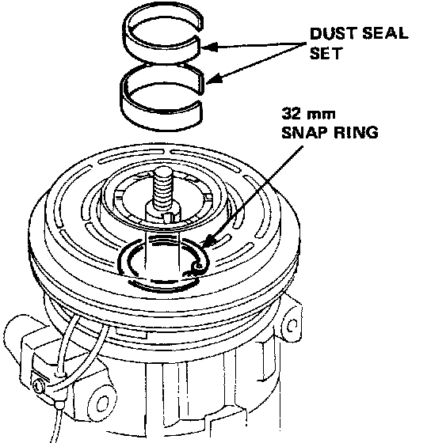
2. Remove the dust seal set.
Remove the 32 mm snap ring.
3. Remove the woodruff key from the key way.
NOTE: If the woodruff key is to be reused, be careful not to damage it.
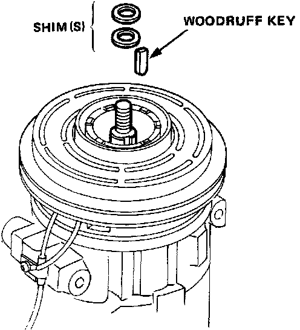
4. Remove the shim(s).
NOTE: After removing, store shim(s) safely in a parts rack.
5. Set the pawls of the tool into the groove of the seal shaft.
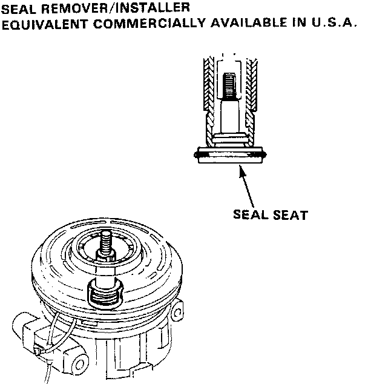
6. Pull out the seal seat.
7. Insert the special tool into the compressor aligning the cutout of the remover with the metal pawi of the seal case.
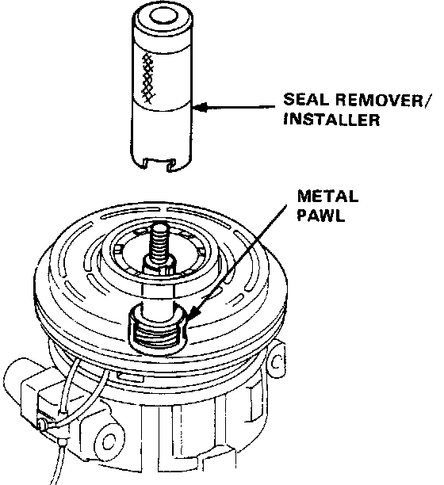
8. Rotate the special tool clockwise or counterclockwise to make sure that the cutout is engaged with the metal pawl.
9. Press the remover until it bottoms, then turn it clock-wise as far it will go.
10. Withdraw the remover.
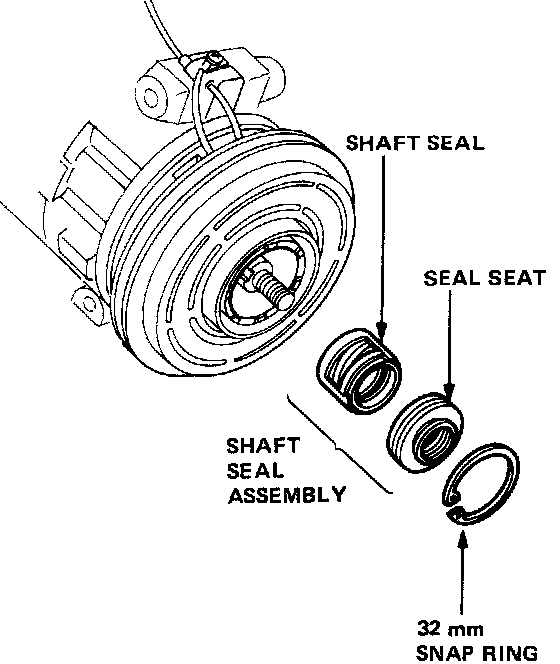
11. Lay down the compressor and clean the shaft seal contacting face of the compressor with cleaning solvent.
CAUTION:
^ Keep the cleaning solvent and dirt out of the compressor.
^ Use only a lint free cloth for cleaning.
^ Do not spill the refrigerant oil from the compressor. Refill the same amount if the oil is spilled out
Installation
1. Clean the new shaft seal thoroughly with cleaning solvent.
NOTE: Install the shaft seal assembly after the cleaning solvent is dried out.
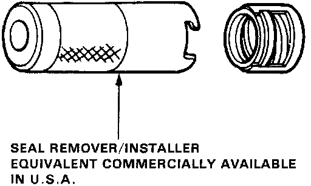
2. Lubricate the shaft seal with refrigerant oil (SUNISO 5GS or equivalent) and install it on the special tool.
NOTE:
^ Use only clean refrigerant oil.
^ Do not touch the sealing surfaces of the shaft seal after lubricating.
3. Liberally lubricate the compressor shaft with refrigerant oil.
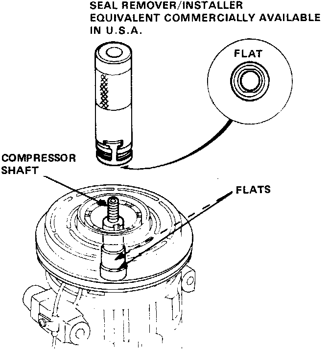
4. Install the shaft seal onto the compressor shaft aligning the seal case flats with the shaft flats.
5. Press the remover until it bottoms, then turn it counterclockwise as far as it will go.
NOTE: The remover will go lower when the flats are aligned.
6. Turn the remover clockwise, then pull it out.
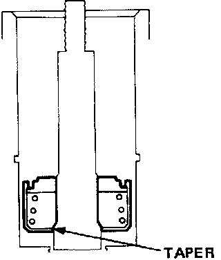
7. Slide the shaft seal onto the shaft until it seats on the shaft taper as shown.
8. Check the inside diameter of the compressor for score marks or foreign particles.
9. Clean the seal seat with cleaning solvent, then lubricate the seal seat with refrigerant oil (SUN ISO 5G5 or equivalent).
NOTE:
^ Use only clean refrigerant oil.
^ Do not touch the sealing surface of the seal plate after lubrication.
10. First slide the seal seat into the compressor by hand as far as possible.
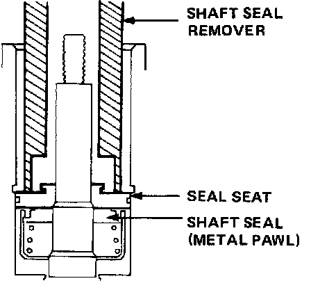
11. Press the seal seat with the grip side of the remover.
CAUTION: Be careful not to damage the compressor.
12. Install the 32 mm snap ring with its chamfered edge inside.
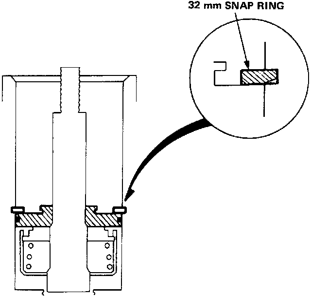
13. Press the snap ring with the grip side of the remover.
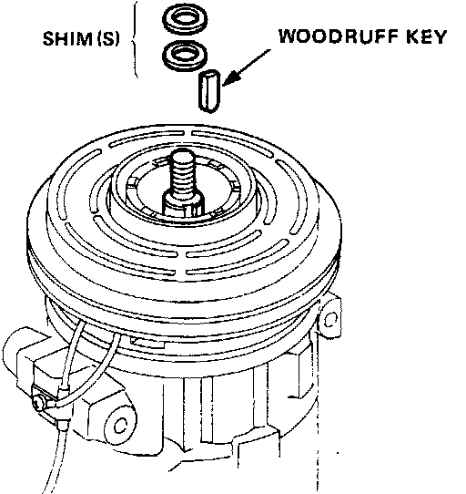
14. Install the shim(s) and woodruff key.
15. Install the pressure plate. Measure the clearance between the pulley and pressure plate all the way around. If the clearance is not within the specified limits, [0.4 - 0.7 mm (0.016 - 0.028 in.)] shims must be added or removed as required.
16. Evacuate and charge the compressor and then perform a leak test.